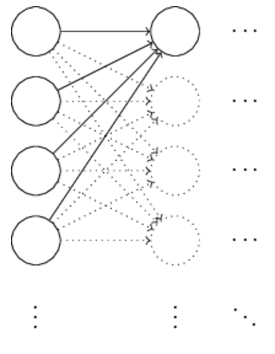

我们前面已经学习了反向传播算法，它是我们学习神经网络的基础。这一章将会介绍一系列的方法技巧来改善反向传播算法的效果，进而改善学习到的神经网络模型。
这些技巧包括： 1. 新的损失函数：交叉熵损失函数 2. 四种“正则化”方法（L1，L2，dropout，人造训练数据），这些是为了我们的模型有更好的扩展性，在新的数据集上能有更好的表现，而不至于过拟合 3. 一种更好的初始化权重的方法 4. 一系列帮助选择超参的启发式方法。随后会在之前代码的基础上实现这些优化来改善我们手写数字识别的准确度。
当然这些也只是优化神经网络的冰山一角，还有很多其他的方法。不过掌握了这些基本的方法，可以加深我们对于问题的理解，对于新的方法技巧也可以很快的上手。
一. 交叉熵损失函数
失败是成功之母，我们学习的过程中免不了要犯错，知错能改，善莫大焉。神经网络的学习也是如此，如果错误都没有定义好的话，模型的学习过程当然也会很缓慢。
理想情况下，我们希望我们的学习算法越快收敛到最佳状态越好，那么实际情况呢？我们先来看一个例子：
这是一个最简单的模型，只有一个神经元，一个输入。我们希望它实现一个简单的功能：当输入为1的时候，输出为0。 这个功能很容易实现，我们手动设置参数都很容易就能满足。不过为了说明情况，我们还是使用梯度下降学习算法来学习这些参数。
我们设置初始参数为：\(w = 0.6, b = 0.9\)。可以计算得出此时对于输入1的情况输出为\(\frac{1}{1+e^{-(0.6*1+0.9)}}\approx 0.82\)。这个结果距离我们理想的输出0还是差的很远。我们设定一个合适的学习率\(\eta = 0.15\)，选择二次损失函数，学习的过程如下：
可以看到，学习的过程很快，在前期的epoch中，损失函数迅速下降。最后得到0.09的损失，虽然不是0，但是已经很低了。假设现在我们选另外一组初始参数，此时\(w = 2, b = 2\), 此时初始输出为\(\frac{1}{1+e^{-(2*1+2)}}=0.98\)，距离0更远了。此时学习过程如下：
可以看到，学习的开始过程非常慢，前150个epochs，参数基本就没有变化，最后结束时得到的输出为0.2跟0还差的比较远，可见这次训练得到的模型并不理想。
这个现象拿来跟人的行为比较的话就显得很奇怪。我们人类在学习的时候，一般错的越离谱的地方改正起来当然就越快，可是这个神经网络却不是这样，初始时距离正确值更远的时候学习的却更慢。这当然不是我们希望的，那我们能找到一种好的方法来避免这种效率低下的学习情况吗？
为了理解这中情况发生的原因，考虑到神经元学习时改变率是跟损失函数的偏导数\(\frac{\partial C}{\partial w}\)和\(\frac{\partial C}{\partial b}\)有关的，学习慢就说明这些值很小。为了理解为什么小，我们先看一下之前定义的二次损失函数：
这里\(a=\sigma (z)\)是输入为1时神经网络的输出，然后\(y=0\)是理想的输出值，求其偏导数得到：
为了理解这些式子的行为，先看一下\(\sigma '(z)\)的函数图像：
我们发现在输出接近1的时候，函数非常平缓，也就是说此时\(\sigma '(z)\)很小，这也会导致\(\frac{\partial C}{\partial w}\)和\(\frac{\partial C}{\partial b}\)很小，从而导致学习速度缓慢。后面会看到，对于大多数神经网络来说，学习速率慢都主要是由于这个原因，而不仅仅是针对这个单个神经元的情况。
1.1 交叉熵损失函数介绍
在介绍交叉熵函数之前先看一个稍微复杂点的例子：
由之前的一个输入改为了多个输入，其中\(z = \sum_jw_jx_j+b\)。交叉熵损失函数定义为：
初看这个式子可能会觉得很奇怪，为什么可以把它当成是一个损失函数呢？
这主要是由于它的两个性质，首先，它是非负的，即\(C>0\)，这个从公式(57)的形式可以验证。其次，当神经元输出接近我们理想输出的时候，交叉熵将会接近0（当然这需要假设理想输出为0或1，对于一般的分类问题是满足这个条件的）。
然后来看为什么交叉熵损失就可以避免训练速度下降，求偏导：
由于\(\sigma (z) = \frac{1}{1+e^{-z}}\)，容易验证\(\sigma '(z) = \frac{\sigma (z)}{1-\sigma (z)}\)。代入上式得到：
这个式子表明，这个权重的梯度跟\(\sigma (z) -y\)有关，也就是说，误差越大，学习的就越快，和我们希望的情况一样。它避免了二次损失函数中由\(\sigma '(z)\)导致的学习速率下降的问题。
同样的方法，对bias有：
练习
问题：
证明\(\sigma '(z) = \sigma (z) (1 - \sigma (z))\)
答案：
\(\sigma '(z) = -\frac{-e^{-z}}{(1+e^{-z})^2} = \frac{e^{-z}}{1+e^{-z}} \frac{1}{1+e^{-z}} = \sigma (z) (1-\sigma (z))\)
回到一开始一个神经元的那个例子，这次使用交叉熵损失函数。初始参数一样为\(w=0.6, b=0.9\)，学习过程结果为：

和之前二次损失函数一样，学习过程很迅速。再来看之前二次损失函数出问题的初始参数\(w=2,b=2\)，使用交叉熵损失函数：
这次初始的学习过程并没有因为输出偏离理想值过多而导致学习缓慢，可以看到损失函数的值在开始阶段很陡峭，也就是说学习速率很快。
多层多个输出神经元的情况，我们也可以写出起交叉熵损失函数：
这里和之前的公式（57）没什么区别，除了之前是一个输出，这里是多个输出，将每个神经元的输出求一个交叉熵然后再相加。
对于交叉熵的计算，一般情况下，假设有两个概率分布\(p_j\)和\(q_j\)，有\(\sum_j p_j ln (q_j)\)，将上面一个神经元的输出a和1-a看成两个概率分布就和这个对应起来了。
但是，当输出层是多个神经元的时候，向量\(a^L\)通常就不构成一个概率分布了，那么\(\sum_j p_j ln (q_j)\)就没什么意义了。但是我们可以将公式(63)看作是对单个输出神经元求交叉熵再求和的过程，因为每个神经元输出都可以被看成是一个在{0, 1}上的概率分布，概率为a和1-a。
那么什么时候该使用交叉熵损失呢？事实上，在激活函数为sigmoid函数时，交叉熵损失基本上总是更好的选择。考虑到我们需要随机初始化参数，这就可能会导致输出严重偏离理想输出的情况（例如本该输出0，却输出了1）。如果使用二次损失，就会导致学习过程很慢。
练习
问题一：
有的时候大家大家可能会出现把\(-[yln(a) + (1-y) ln(1-a)]\)中的y和a记反的情况，记成了\(-[aln(y) + (1-a)ln(1-y)]\)，当\(y=0\)或\(y=1\)时，第二个式子会出现什么问题，第一个式子会出现这样的问题吗，为什么？
答案：
\(y=0\)时，\(aln(y)\)只在\(a=0\)时为0，其余为\(\infty\)，而\((1-a)ln(1-y)=0\)；\(y=1\)的情况类似。
对于第一个式子则没有这样的问题，\(y=0\)时，有\(-ln(1-a)\),\(y=1\)时，有\(-ln(a)\)。
问题二：
在一开始的单神经元讨论中，我们知道当对所有输入优\(\sigma (z) \approx y\)时，交叉熵最小，这个讨论当时是建立在y为0或1的情况，也就是在分类的情况下讨论的。证明对于其他问题（例如回归问题），当y是[0,1]之间的数的时候，仍然有\(\sigma (z) =y\)对于所有输入成立将最小化交叉熵损失，即此时交叉熵为
答案：
因为每个输出样本是独立的，这其实就是求\(C(a) = yln(a) + (1-y) ln(1-a)\)最大值时的a。
求导\(\frac{\partial C}{\partial a} = \frac{y}{a} + \frac{y-1}{1-a} = \frac{y-a}{a(1-a)}\)，因为\(a(1-a)>0\),所以当\(a<y\)时，\(\frac{\partial C}{\partial a}>0\), 当\(a>y\)时，\(\frac{\partial C}{\partial a} <0\)，函数先增后减，在\(y=a\)时取最大值，即\(a = \sigma (z) \approx y\)的时候，交叉熵损失最小。
拓展
多层网络多神经元输出的情况：
对于二次损失函数，此时有：
同样的，\(\sigma '(z^L_j)\)会导致学习速率下降当该神经元处于错误的saturated状态时。对于交叉熵的情况，有：
代入上式有：
\(\sigma '(z^L_j)\)就被去掉了，说明交叉熵损失同样可以解决这种情况下学习速率下降的问题。
线性激活函数的情况：
此时，对于二次损失函数有：
由于没有了sigmoid激活函数有\(a=z\)，于是得到：
可以看出，此时，二次损失函数并不会导致学习速率下降，是合适的损失函数。
1.2 在MNIST数字分类上使用交叉熵损失函数
类似于第一章的神经网络结构，30个神经元的隐藏层，不过这里使用交叉熵损失函数。
1 2 3 4 5 6 | import mnist_loader
import network2
training_data, validation_data, test_data = mnist_loader.load_data_wrapper()
net = network2.Network([784, 30, 10], cost=network2.CrossEntropyCost)
net.large_weight_initializer()
net.SGD(training_data, 30, 10, 0.5, evaluation_data=test_data, 10 monitor_evaluation_accuracy=True)
|
注意到，现在我们移除了模型初始化时的参数初始化过程，而改为了使用不同的初始化函数来手动初始化这些参数。不过一开始我们还是使用之前一样的初始化方法，只是改为了在net.large_weight_initializer()中进行。这次得到的结果是95.49%和之前使用二次损失的情况下的95.42%几乎一致。
当我们使用100个隐藏层时，得到的结果为96.82%，比二次损失时的96.59提高了不少。考虑到错误率从3.41下降到3.18，接近14个百分点，已经称得上不错的改进了。
虽然交叉熵损失给我们带来了或多或少的改进，但是这并不足以证明它就是一个更好的选择。这是因为这里并没有对超参进行最优的选择。在进行超参的优化选择后，这个改善就会更加明显，不过就目前来说，这足以使我们相信交叉熵损失是一种更好的选择。
就本章乃至本书的后续内容来说，我们经常会对算法进行一些优化，然后会获得一些改善的结果。但是要使这些改善非常明显通常需要大量的超参优化，为了避免这些工作，我们仅仅对这些优化浅尝辄止，基本上能改善效果就行，就说明我们的优化起到了作用，而不纠结于是否获得了最优的结果。
到目前为止，我们已经花了很大的篇幅来介绍交叉熵损失函数。可能我们会有疑问，为什么要花这么大力气去使用它，最后在MNIST上也就得到了一个马马虎虎的结果？随后我们还会看到其他技术，尤其是正则化将会带来更大的改善。那为什么要用交叉熵损失呢？一方面是因为它是一个广泛使用的损失函数，值得去学习理解。更主要的原因是神经元的saturation是神经网络中一个很重要的问题，而交叉熵是一个很好的理解这个问题进而去处理这个问题的开端。
1.3 交叉熵的意义以及来历
目前为止，关于交叉熵的讨论还是仅仅停留在公式的推导和实现上。但是它到底有什么意义呢，它是怎么被创造出来的呢？
我们先看后一个问题，一开始是出于什么样的动机才想出了交叉熵这个概念。假设我们已经知道了算法学习过程变慢是由于\(\sigma '(z)\)导致的，那么我们就在想能不能找到一个合适的损失函数使得\(\sigma '(z)\)消失。使得：
为了找到这样的损失函数，注意到：
代入\(\sigma '(z) = \sigma(z)(1-\sigma(z)) = a(1-a)\)得到：
跟（72）式对比得到：
通过积分可以得到：
对于多个样本的情况也是一样的：
通过这样的方式就找到了交叉熵损失函数。
但是它的意义是什么呢？我们怎么去理解它呢？详细解释需要更多的篇幅，这里简单说一下，它来自信息论领域，更确切的说它描述的是状态的随机性。例如，假设我们神经元的输出a表示的是输出为1的概率，1-a为输出为0的概率，那么交叉熵测量的就是输出是0还是1的随机性。如果我们对于结果很确定，比如说概率为1或者0，那么这种随机性就很低，交叉熵就小，反之则大。
拓展：
之前讨论了在使用二次损失函数的时候，当神经元处于saturated状态的时候，学习速率很慢。但是注意到影响学习速率的还有另外一个因素：
其中的\(x_j\)同样会影响到这个导数值，当其接近0的时候，\(w_j\)的学习速率会变得很慢。解释为什么没办法通过选择合适的损失函数来删除掉\(x_j\)的影响。
如果还记得这个式子的由来的话就很容易知道，\(x_j\)这项是由于\(\frac{\partial z}{\partial w_j}\)引入的，无论怎么选择损失函数都没办法将其去除。
1.4 Softmax
这一章我们主要将会使用交叉熵损失函数来解决训练过程缓慢的问题，但是这里还是要简要介绍一下另外一种基于softmax层神经元的方法。
softmax的想法是定义一种新的神经网络输出层，在该输出层上，\(z^L_j = \sum_k w^L_{jk}a^{L-1}_k + b^L_j\)，随后并不使用sigmoid函数计算输出，而是对每个\(z^L_j\)使用softmax函数:
很容易验证
所以当其中一个输出增加的时候，其他的输出会减小。而且由于指数函数的原因，这些输出值都是正数，它们的和为1，所以可以将softmax层的输出看作是一个概率分布。
softmax输出层被当作概率分布是很有意义的，因为它可以将输出\(a^L_j\)看成是输出为j的概率。例如，对于MNIST分类问题，\(a^L_j\)可以认为是神经网络估计这个数字是j的概率。而如果使用sigmoid函数，则没有这样的性质。输出值也没有这样直观的解释。
练习
问题：
举出一个例子，证明在使用sigmoid输出层的时候，\(a^L_j\)的和不为1
答案：
如果用sigmoid函数，基本跟1就没有联系吧。随便举个例子，三个输出层，分别为\(z^L_1 = z^L_2 = z^L_3 = 1\)，然后\(a^L_1 = a^L_2 = a^L_3 = \frac{1}{1+e^{-1}} \approx 0.73\)，它们的和当然不为1。
指数使得softmax输出为正数，它们之间的和为1，所以我们还可以将softmax看作是一种对\(z^L_j\)进行放缩的一种方法，使得它们之间构成一个概率分布。
练习
问题一：
softmax函数的单调性：证明\(\frac{\partial a^L_j}{\partial z^L_k}\)在\(j=k\)时为正，在\(j \neq k\)时为负，于是有增大\(z^L_j\)将会增大对应神经元j的输出，会减小其他神经元的输出。
答案：
由定义有\(a^L_j = \frac{e^{z^L_j}}{\sum_k e^{z^L_k}}\), \(\frac{\partial a^L_j}{\partial z^L_j} = \frac{e^{z^L_j}(\sum_k e^{z^L_k}) -e^{z^L_j}e^{z^L_j}}{(\sum_k e^{z^L_k})^2}=\frac{e^{z^L_j}\sum_{k\neq j} e^{z^L_k}}{(\sum_k e^{z^L_k})^2}>0\)
对于任意\(k \neq j\)的情况，\(\frac{\partial a^L_j}{\partial z^L_k} = -\frac{e^{z^L_j + z^L_k}}{(\sum_k e^{z^L_k})^2} < 0\)
问题二：
sigmoid输出层的一个优点是\(a^L_j\)只和它的加权输入有关，因为\(a^L_j = \sigma (z^L_j)\) , 解释为什么softmax输出层就没有这样的性质，它的任意输出\(a^L_j\)都和所有神经元的加权输入有关
答案：
这个从softmax的定义式就能看出来，分母中受到其它\(z^L_k\)的影响，而且上面的导数值也表明\(\frac{\partial a^L_j}{\partial z^L_k}\)对于其他\(k \neq j\)的情形，导数值并不等于0，表明它会受到这些\(z^L_k\)的影响。
拓展
设想我们有一个有softmax输出层的神经网络，激活量\(a^L_j\)已知，证明对应的加权输入的形式为：\(z^L_j = ln(a^L_j) + C\)，其中\(C\)为与\(j\)无关的常数。
由定义可知\(a^L_j = \frac{e^{z^L_j}}{\sum_k e^{z^L_k}}\)，\(e^{z^L_j} = a^L_j \sum_k e^{z^L_k}\)，\(z^L_j = ln(a^L_j \sum_k e^{z^L_k}) = ln(a^L_j) + C\)，其中\(C = ln(\sum_k e^{z^L_k})\)为与\(j\)无关的常数。
在了解了softmax的这些概念后，我们来看一下它是怎么处理学习变慢的问题的。先定义对数似然损失函数。\(x\)为一个训练样本输入，\(y\)是理想输出，那么对数似然损失为：
例如，在训练MNIST图片的时候，当输入为7的图片时，这个损失为\(-ln(a^L_7)\)。为了理解这个定义，考虑如果我们的神经网络准确度很高，有足够的信心判断它时7，则\(a^L_7\)将会接近1，对数损失将会很小，否则\(a^L_7\)接近0时，损失就会很大。所以对数似然符合我们对于损失函数的要求。
对该损失函数求偏导数得：
可以看出这个函数和交叉熵损失函数时计算的偏导数是一样的。事实上，softmax输出层结合对数似然损失的情况和sigmoid输出层结合交叉熵损失的情况非常相似。
既然这两种情况很相似，那么该如何做出选择呢？事实上，对于大多数情况这两种方案都是可行的。在这章的剩余部分，我们会使用sigmoid+交叉熵损失的组合，在第六章再使用softmax+log似然损失。转变的原因只是我们希望迎合一些学术论文中的神经网络的例子。大多数情况下，softmax+log似然损失更适合于讲输出解释为概率的情况，尤其适合于类似MNIST的分类问题。
拓展
拓展一：
证明方程（81）和（82）
\(\frac{\partial C}{\partial w^L_{jk}} = \frac{\partial C}{\partial a^L_j}\frac{\partial a^L_j}{\partial z^L_j}\frac{\partial z^L_j}{\partial w^L_{jk}}\)
其中\(\frac{\partial C}{\partial a^L_j} = -\frac{1}{a^L_j} = -\frac{\sum_k e^{z^L_k}}{e^{z^L_j}}\)
由之前计算可得\(\frac{\partial a^L_j}{\partial z^L_j} = \frac{e^{z^L_j}\sum_{k\neq j} e^{z^L_k}}{(\sum_k e^{z^L_k})^2}\)
\(\frac{\partial z^L_j}{\partial w^L_{jk}} = \frac{\partial (w^L_{jk}a^{L-1}_k + b^L_j)}{\partial w^L_{jk}} = a^{L-1}_k\)
三式相乘得到\(\frac{\partial C}{\partial w^L_{jk}} = -a^{L-1}_k\frac{\sum_{k\neq j} e^{z^L_k}}{\sum_k e^{z^L_k}} = a^{L-1}_k (a^L_j - y_j)\)，这里的\(y_j\)需要说明一下，\(y\)是对应j的输出向量，也就是在分量j上为1，其余均为0
同理\(\frac{\partial C}{\partial b^L_j} = a^L_j -y_j\)因为\(\frac{\partial z^L_j}{\partial b^L_j} = 1\)
拓展二：softmax加对数似然损失情况下的反向传播算法
证明
这个其实在拓展一的过程中已经证明了，就是前面两个偏导数的积。
二. 过拟合和正则化
2.1 过拟合
毋庸置疑，一个参数非常多的模型具有很强的拟合数据的能力，但是仅仅能够拟合已知的测试数据并不能证明它是一个好模型，它很有可能在面对新的数据的时候就无能无力了，这样的模型就不是一个可信的模型，这就是我们经常会遇到的过拟合问题。
回到我们隐藏层为30个神经元的那个模型，有将近24000个参数，100个神经元的时候，变成了80000个参数，这么多参数的情况，我们的模型是否可信呢？
我们先测试一下，我们使用30个神经元的情形训练模型，但是这次不用50000个训练图片，而是只用1000张测试图片。训练结果如下：
结果看上去不错，损失函数平滑的下降。再来看一下在测试集上的表现：
仅仅在82%左右，虽然我们的损失函数显示是在一路下降，但是准确率在达到一定水平之后就没有继续提高，只是在这个这个值上下波动。所以我们可以认为在epoch280之后，我们的模型在测试数据上就不在具有足够的泛化能力了，也就是说此时的神经网络出现了过拟合的问题。
这里我们可能会有疑问，为什么用训练数据的损失函数变化去对比测试数据的准确度？让我们来看一下测试数据的损失函数：
可以看到在epoch15左右的时候，损失就已经开始上升了，而此时训练数据的损失还在下降，这也是模型已经过拟合的另一个体现。于是就有了一个问题，将epoch15还是epoch280作为过拟合的开始呢？从实际出发，我们一般更关心模型的准确率，而不是损失函数的变化，所以epoch280通常是更好的选择。
从训练数据的准确度变化也可以看出过拟合的另一个体现：
准确率几乎达到了100%，然而我们在测试数据上试验却只达到了82.27%的准确率。此时我们的模型只是在学习训练数据的特点，而不是在学会去识别数字。就类似于仅仅是在记忆训练集，而没有学会真正的识别数字的方法，导致在测试集上表现差。
由于神经网络中通常都有大量的权重和偏差，使得过拟合在神经网络中是一个经常发生的问题，于是就有了各种各样的检测和消除过拟合的方法。
判断是否存在过拟合最简单明了的方法就是上面的方法，对比训练数据和测试数据的准确率。看到测试数据上准确率不再提升时，我们就可以停止训练了。当然，这并不是过拟合真正的表现，有可能出现训练准确率和测试准确率都不提升的情况。
在实际中，我们增加一个验证集来替代测试集去检测过拟合的问题。
1 2 | import mnist_loader
training_data, validation_data, test_data = mnist_loader.load_data_wrapper()
|
回到MNIST上，这次我们就使用50000的训练，10000的验证，10000的测试。那为什么不能直接使用测试集去避免过拟合呢？简单的说，可以将验证集的使用是帮助我们去进行超参选择的过程，如果使用测试集可能会使得当前的超参是对于测试集最好的，而不是真实的最佳，同样会导致过拟合问题。
当然，实际上，当我们看到模型在test数据上表现不好的时候，肯定会重新去训练数据，选择超参，这样做下去是不是又会导致过拟合呢？这的确是个难题，不过本文并不讨论这些内容。在本文的内容中，并不需要去特意考虑这个问题，将数据分成training，validation和test就可以了。
之前过拟合的时候我们使用了仅仅1000张训练数据，这次我们使用50000张训练数据看一下：
可以看出，训练数据和测试数据的表现很接近。训练数据上最好的结果97.86%对应了在测试上的95.33%，这期间相差了2.53%对比之前17.73%的差距，说明此时过拟合已经被减少了非常多了。
通常来说，这种增大训练数据的方法是应对过拟合最好的方法，只要有足够的数据，过拟合就不容易发生。不幸的是，训练数据的获取是要付出代价的，有的时候并不是那么容易就能获得，而且数据过多的话，算法的执行效率有的时候也会成为瓶颈。
2.2 正则化
抛开增加数据量这种方法，是否还存在其他从技术角度解决过拟合的方法呢？一种方法是降低模型的复杂度，也就是减小神经网络的模型规模。然而，复杂的神经网络具有解决更复杂问题的能力，所以我们通常并不想使用这种方法。
所幸我们还有一种被称为正则化的技术。接下来先讲一种使用最广发的正则化技术：L2正则化，通过在损失函数后加上一项模型参数的平方项得到，例如对于交叉熵损失函数：
第一项就是之前的交叉熵损失，\(\lambda>0\)是正则化系数。
以同样的方式可以定义平方损失函数的L2正则化形式：
更通用的形式为：
\(C_0\)为其他任意损失函数。
正则化的影响在于引入了模型参数大小的影响，更偏向于选择参数小的模型。正则化还可以看作是一种在最小化损失和最小化参数之间的折中，\(\lambda\)越大，更偏向于使参数小，反之，更偏向于选择损失小。
先来看一个正则化解决过拟合的例子。由（87）式求导得：
其中关于\(C_0\)的求导部分可以根据之前的反向传播算法求，于是可以得到参数的更新公式：
由于\(1-\frac{\eta \lambda}{n}\)的存在，权重每次更新前都会被缩小。
对于随机梯度的情况，有：
对于bias则没有变化：
使用正则化的代码运行（\(\eta = 0.5, \lambda = 0.1\)），在训练数据上，损失函数下降如下：
但是这一次在测试数据上，准确度却是一直上升的：
这就说明在正则化的帮助下，过拟合被解决了。而且新的准确率87.1%也高于之前没有正则项时的82.27%。
那么如果我们使用50000张图片训练呢，之前在50000张图片的情况下，并没有遇到很严重的过拟合问题，那么正则项能否进一步改善模型呢？注意到由于\(n=1000\)这次变成了\(n=50000\)，所以\(1-\frac{\eta \lambda}{n}\)也发生了变化，再使用\(\lambda = 0.1\)将导致权重变小的很少，正则化影响很少，于是将其改为\(\lambda = 5.0\)
可以看出正则项发生了作用。首先，测试数据上的准确率由95.49%提高到了96.49%。其次可以看到训练数据的准确率曲线和测试数据的准确率曲线之间的间隔变小了，两者更加接近了，说明过拟合的情况被减轻了。
这些都表明正则化可以减轻过拟合的影响进而提高分类准确率，除此之外，正则化还有一个好处。从训练过程中发现，在未使用过拟合之前，由于权重初始化的随机性，导致每次运行的结果之间差异很大，经常会出现损失函数掉入局部最小值的情况。但是在加入了正则项之后，不同的运行之间更容易出现相同的结果。
为什么会这样呢？直觉上来看，当没有正则项的时候，weights向量会增加，导致算法更难正确的在参数空间上找到正确的下降方向。
2.3 为什么正则化可以减轻过拟合问题
现在有如下图中的数据来构建一个简答的模型：
暂且使用多项式模型来拟合这些数据。图中有10个点，很显然使用一个9阶的多项式可以完美拟合这些点：
当然我们也可以使用一条直线，也就是1阶多项式来拟合它们：
哪一个模型更好呢？哪个模型在面对新数据的时候会有更好的泛化能力呢？
在不知道其他信息的情况下，我们并不好直接作出结论。先考虑两种可能：1. 9阶多项是真实的模型，可以完美拟合新的数据 2. 1阶多项式是真实模型，但是它在预测的时候会出现一些误差。
在图中给定的数据上看，两者之间并没有太大的差异。但是设想有一个非常大的\(x\)，由于\(x^9\)等高阶的影响，两个模型预测的\(y\)就有非常大的区别了。一种观点是选择更简单的模型，简单的模型能解释的情况更不容易是由于巧合出现的。这个9阶的模型更可能只是完美的拟合了既有数据，对于未知数据缺乏预测能力。选择更简单的模型也被称为“Occam的剃刀”原则。
回到神经网络上来，对于weights小的的模型，输入的改变对于输出的改变影响很小，模型就不容易学习到数据上呈现出来的细枝末节的噪声规律。
这里接下来作者将了很多关于过拟合的启发性的思考就不讲了，太长了。。。
作为这一小节的总结，回到一开始的一个问题：为什么在L2的正则项中不考虑bias？经验上看，加不加bias并不会太大的影响结果，所以并没有特别的准则说要不要加bias。但是注意到，相对于大的weights，一个大的bias并不会使得一个神经元对输入变得更加敏感。我们也不用担心大的bias会让模型过多的学习数据中的噪声规律。而且大的bias会使得模型更加灵活，例如大的bias会让神经元更容易被saturated。所以我们通常并不对bias做正则化处理。
2.4 正则化的其它方法
除了L2正则化以外，还有很多正则化的手段。这里稍微讲一下常见的几种方法：L1正则化，dropout，人造数据。
2.4.1 L1正则化
损失函数为：
求导后：
其中\(sgn(w)\)函数当，\(w\)为正时为1，\(w\)为负时为-1。于是有：
之前L2的情形：
从两种式子可以看出，在更新\(w\)之前，weights都先被缩小了。不过两者的方式不同，L1是按一个常数\(\frac{\eta \lambda}{n}\)进行缩小的（这个缩小应该理解为绝对值的缩小），L2则是按照一定的比例\(1-\frac{\eta \lambda}{n}\)在原有基础上缩小。所以说，对于一个\(|w|\)很大的权重，L1正则化对其的减小程度要远小于L2正则化对其的减小程度。反之，对于一个\(|w|\)小的权重，L1的作用更加明显于L2。这也将导致，L1正则化更倾向于保留神经网络中更加重要的少量链接，而将其它的权重减小到0。
上面其实还有一个细节就是当\(w=0\)的时候，\(sgn(w)\)导数是不存在的这个时候怎么办。这个时候只要当成没有正则化项就好了，这也很好理解，L1本来就是将权重减小到0，既然它已经是0了，当然不能再减小了。
2.4.2 Dropout
Dropout是一种完全不同于L1，L2正则化的方法，它并不依赖于修改损失函数，而是直接去修改神经网络的结构。
假设我们现在在训练这样一个神经网络：

设想有一个训练输入\(x\)和对应的输出\(y\)。正常情况下，我们一次前向传播遍历所有神经元，然后通过后向传播计算梯度。Dropout的过程则不同。开始的时候，随机删除掉隐藏层的一半神经元：
同样的方法，在修改过后的神经网络上进行前向和后向传播。在完成一次mini-batch后，更新weights和biases。然后复原神经元，再随机删掉隐藏层的神经元，重复这样的过程。
这样，我们就能学习到一系列的weights和biases。但是这是在只有一半隐藏层神经元的情况下得到的，所以当运行完整神经网络的时候，隐藏神经元都会起作用，为了补偿这种差异，对隐藏层的参数取一半值。
当我们dropout不同的神经元的时候，就相当于训练了多个不同的神经网络。所以dropout的过程就有点像对大量神经网络的影响取平均的过程。不同的神经网络会以不同的方式产生过拟合，dropout就会减少这种过拟合。
2.4.3 人造数据
从之前的训练结果可以看到，当只使用1000张图片进行训练的时候，准确率下降到85%左右。这很正常，因为数据不够，没办法完全体现手写数字的多样性。现在试着慢慢增大数据量，观看其准确率：
可以看出训练数据越多，准确率越好。
获取更多的训练数据是个好方法，不过实际情况下这并不总是可行的。另外一种替代方案是根据现有数据去人为制作一些训练数据。例如对于MNIST中的一副图片数字5:
对其旋转15度得到：
可以看到这仍然是一个合理的样本5，通过这样的方式就达到了增大样本数据集的目的。
这个想法是很有效而且在手写数字以外的问题上也被广泛使用。变化数据的原则是变换的操作要符合真实世界的情况。例如对于语音识别，人类可以在有背景噪声等情况下识别出正确的信息，我们于是可以对语音数据加上背景噪声作为对数据的扩展。
练习
上面提到对MNIST训练数据扩展的时候使用了微小的旋转操作，如果操作幅度很大的话会发生什么呢？
我的感觉是如果幅度非常大的话相当于引入了一些完全不是该数字的样本，相当于引入了错误的标注样本，会降低学习效果。
除了神经网络，增大数据集会对其他的机器学习算法造成什么影响呢？看一下SVM下的结果：
可以看到，虽然在小数据集上svm的效果差很多，但是随着数据量的增加，它的结果开始逼近神经网络的结果。而且svm在50000张图片的效果是好与神经网络在5000张的效果的。所以说，增大数据集有的时候可以弥补不同机器学习算法之间的差距。
还可以发现，算法的好坏很多时候是跟数据集有关的，只有结合特定的数据集才可以得出算法A要好与算法B的结论。
以上我们讨论了过拟合和正则化，当然这并没有结束，以后还会经常接触到它们。要知道，过拟合在神经网络中是经常会遇到的问题，特别是随着现在神经网络结构的复杂性增加，使用有效的正则化方法就显得尤为重要了。
三. 参数初始化
前面在做参数初始化的时候使用的是\(G(0,1)\)的标准正态分布，虽然这是可行的，但是我们还是想看看有没有更好的方法，没准还能够加速算法的学习过程。
很容易发现标准正态分布初始化并不是一个很好的选择。设想对于这样一个神经网络，有1000个输入神经元，考虑第一层隐藏层的第一个神经元，对于它与输入层链接的参数适用标准正态分布进行初始化：

为了简化问题，假设这1000个输入神经元中一半为1，一半为0。考虑隐藏层神经元的加权输入\(z=\sum_j w_j x_j + b\)，这就导致\(z\)相当于是501个正态分布随机变量的和，然后就可以得到\(z\)服从均值为0，标准差为\(\sqrt{501}\approx 22.4\)。这就说明\(z\)是一个非常“宽”的正态分布：
于是就会出现\(|z|\)非常大的情况，导致\(z>>1\)或者\(z<<-1\)。这就导致\(\sigma (z)\)非常接近0或者1。也就是说这个隐藏层的神经元被saturated了。于是改变这些权重对它的激活只会造成很小的影响，进而对后续神经网络也只能造成很小的影响，对于最终的损失函数也将只造成很小的影响。于是在梯度下降算法中，这些权重的更新就非常缓慢。之前介绍的交叉熵损失函数只适用于解决输出层神经元saturated的情况，对于隐藏层神经元saturated就无能无力了。
一种更好的方式是对于一个有\(n_{in}\)个输入权重的时候，对这些权重的初始化按照均值为0，标准差为\(\frac{1}{\sqrt{n_{in}}}\)的正态分布初始化，对于bias的话则还是按标准正态分布初始化（理由稍后再说）。这样就得到的\(z=\sum_j w_j x_j + b\)就是一个均值为0，更窄的的正态分布。设想，对于之前500个输入为0，500个输入为1的例子，这样的\(z\)的标准差为\(\sqrt{3/2} = 1.22\)。这个正态分布更窄，更不容易出现saturated状态。
练习
验证上面提到的情况下，\(z=\sum_j w_j x_j +b\)的标准差为\(\sqrt{3/2}\)
答案：
根据概率学的知识知道：相互独立的随机变量的和的方差等于它们各自方差的和。由于其中\(x\)有500个分量为0，最终只有501个随机变量相加，得到\(500*\frac{1}{1000} + 1 = \frac{3}{2}\)。
之前提到bias的初始化并没有变化，因为事实上，它对神经元是否容易saturated并没有什么影响。接下来比较两种初始化下，算法的结果：
虽然最后两者都获得了不错的结果，但是新的初始化方式无疑使算法收敛的更快。之后在第四章的一些例子还将表明，在某些情况下，这种初始化不但能加快算法收敛，还能提高模型的准确度。
拓展
L2正则化与上述weights初始化之间的联系
L2正则化有的时候会起到和上述weights的初始方法一样的作用。设想我们使用老的使用标准正态分布的初始化方法：对于以下情况：
(1)\(\lambda\)是一个不大小的数，导致第一次epoch后，weights受到\(1-\frac{\eta \lambda}{m}\)的影响已经衰减到很小了
(2)\(\lambda\)符合\(\eta \lambda << n\)，每次epoch后，weights按因子\(e^{-\frac{\eta \lambda}{m}}\)衰减
(3)\(\lambda\)是一个不太大的数，weights逐渐衰减到\(\frac{1}{\sqrt{n}}\)左右，其中\(n\)是神经网络中所有权重的数量。
讨论它们之间的联系
参考这位大神的这篇博客：http://charleshm.github.io/2016/03/Regularized-Regression/
四. 其它方法
上面已经讲了很多最经典的方法，下面介绍一些其它方法，它们大多是对上述基本方法的改进。
4.1 随机梯度下降算法的改进
基于Hessian矩阵
对于关于变量\(w=w_1, w_2, ...\)，损失函数\(C\)的泰勒展开为：
可以写作为：
其中\(\bigtriangledown C\)是之前已经定义的梯度向量，\(H\)为Hessian矩阵，其中第\(j\)行第\(k\)列的元素为\(\frac{\partial^2 C}{\partial w_j \partial w_k}\)。假设不考虑高阶项对\(C\)进行近似处理：
通过微分可以得到上面右式在
时达到最小值。
于是我们可以将\(w\)移动到\(w+\Delta w = w - H^{-1}\bigtriangledown C\)使得损失函数减小。于是得到如下算法：
- 选择初始点\(w\)
- 更新\(w\)：\(w' = w - H^{-1}\bigtriangledown C\)，其中\(H\)和\(\bigtriangledown C\)为在\(w\)下求得
- 更新\(w'\)：\(w'' = w' - H^{'-1}\bigtriangledown 'C\)，其中\(H'\)和\(\bigtriangledown 'C\)为在\(w'\)下求得
- ...
实际情况下，（105）式只是一个近似，最好选择小一点的步伐更新\(w\)，通常乘上一个学习率因子\(\Delta w = -\eta H^{-1}\bigtriangledown C\)。
Hessian方法通常比标准的梯度下降算法收敛更快，但是实际中并不好实现。因为Hessian矩阵的存在，对其求逆矩阵是一个非常耗时的操作。实际中通常使用其它基于Hessian矩阵的算法，而不是直接对Hessian矩阵求逆矩阵。
基于惯性的梯度下降算法
Hessian矩阵优化的优点是它不仅可以处理梯度的信息，更能够获取梯度变化的信息。基于惯性的方法也是基于类似的考量，但是避免了大量的矩阵运算。
惯性是物理上的名词，在这里引入肯定就需要对原有算法做一些修改。首先是引入速度的概念，梯度影响的是加速度，可以改变速度，但是并不能直接改变位置，速度才对位置起直接改变的作用。其次是引入摩擦力的概念，它会逐渐减小速度。
对于每个变量\(w_j\)，引入对应的速度\(v = v_1, v_2, ...\)，于是得到，代替原来的参数更新公式\(w\rightarrow w' = w - \eta \bigtriangledown C\)：
其中\(\mu\)是影响着系统摩擦力的超参。为了理解这两个方程，不妨令\(\mu = 1\)，即没有摩擦力的情况。\(\bigtriangledown C\)为影响速度的因素，然后速度影响位置\(w\)的变化率。速度的产生依靠梯度项的不断叠加导致，这就意味着，如果几次学习过程中梯度都是一样的方向，就可以获得一定规模的速度。
例如当我们沿着斜坡下降的时候由于速度在增大，相对于标准的梯度下降就会更快的到达谷底。但是就会出现跑过头的情况。这也就是引入\(\mu\)的原因。当\(\mu = 1\)时，没有摩擦，当\(\mu = 0\)时，摩擦非常大，速度无法维持，（107）式，（108）式又变成了没有惯性的情况。通常情况下\(\mu\)是在(0,1)之间的数。
练习
问题一：
如果\(\mu>1\)会出现什么情况
答案：
大于1说明，速度不但会随着梯度项进行积累，每次学习之间还会按\(\mu\)倍增大，导致在梯度很小的时候，速度还是很大，无法保障最后时刻顺利收敛。
问题二：
如果\(\mu<0\)会出现什么情况
答案：
每次速度方向，可能在前进的时候会来回震荡
4.2 其它神经元模型
前面的所有讨论一般都是给予sigmoid神经元的。实际中很多情况下，其它神经元有的时候会有比sigmoid神经元更好的表现。
tanh函数
将sigmoid函数替换为tanh函数：
其中tanh函数形式为：
容易得到：
这样就可以将tanh看成是sigmoid函数的一个伸缩变换后的版本。得到其图像为：
一个不同就是tanh的值域为-1到1，而不再是0到1。
练习
问题： 证明式（111）
答案：
\(1+tanh(z/2) = 1+ \frac{e^{z/2} - e^{-z/2}}{e^{z/2} + e^{-z/2}} = \frac{2e^{z/2}}{e^{z/2} + e^{-z/2}} = \frac{2}{1+e^{-z}}\)
RELU
rectified linear unit函数：
可以看到relu和sigmoid或者tanh之间还是有很大的差距的。那么什么时候该选择它呢？目前并没有非常好的理论来帮助我们进行选择。不过由前面知道，由于\(\sigma '\)项的原因，会使神经元处于saturated状态，tanh也会面临一样的问题，不过对于relu来说，增大其输入并不会导致神经元的saturation。另一方面，当其输入为负时，该神经元的学习就会完全终止。
本文只是一个笔记性质的总结，其实还有很多作者启发性的思考实在太长了，就没有写，想了解的推荐大家看原文。